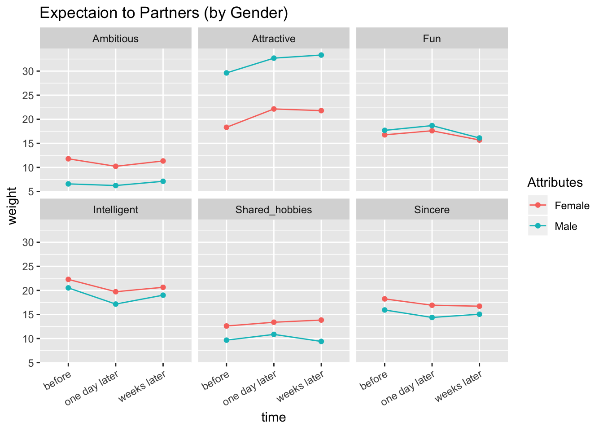
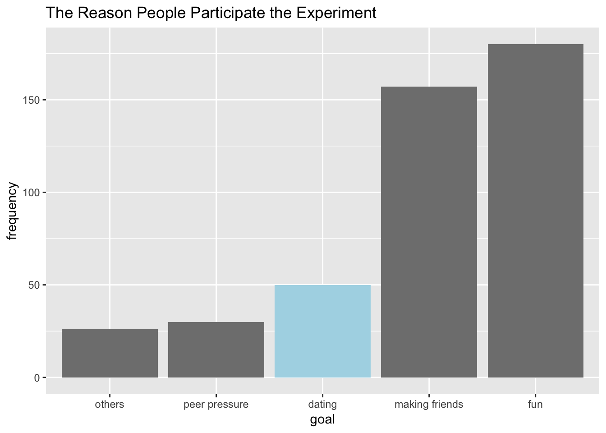
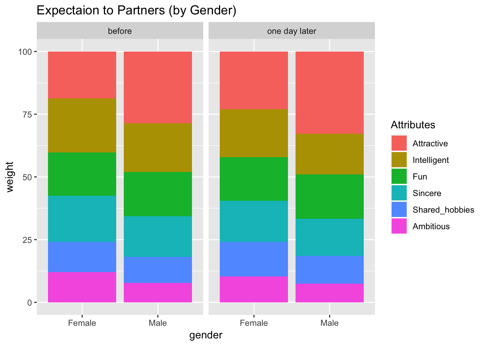
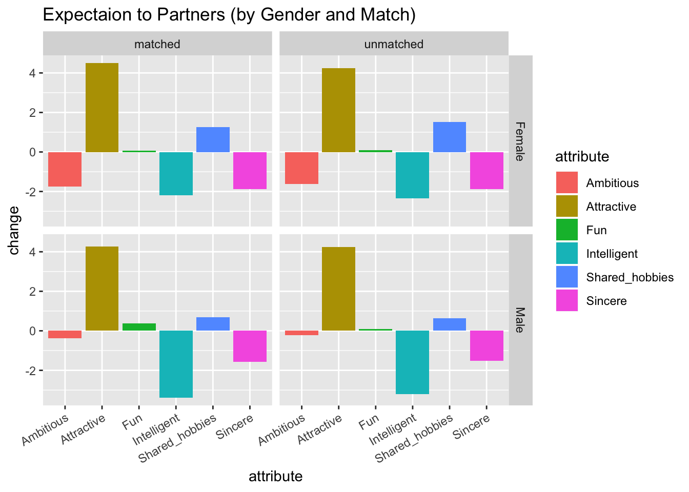
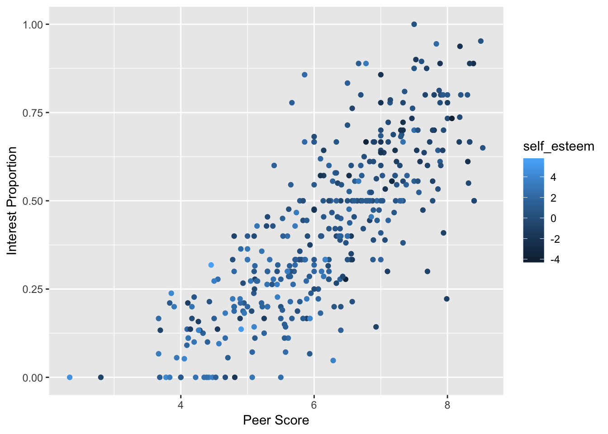

Chapter 5 Results
5.1 Question: Will backrgound and common interests influence the match? Which feature is the most influential?
To answer this question, we have to look at background and common interests seperately. Background includes three features: race, from, and field. We can do so by comparing the chance of matching by conditioning on whether they are from the same race, same from (location), and same field.
Data Cleaning:
we would like to append 6 indicator columns that indicates whether this person and his/her partner share that feature in common (actually 5 because samerace is available in the original data).
<<<<<<< HEAD## Loading required package: grid##
## Attaching package: 'jsonlite'## The following object is masked from 'package:purrr':
##
## flattenload('data/speed_dating.RData')
# get feature values of the partner
for (i in 1:nrow(speed_dating)) {
# for each row, get partner's id
pid = speed_dating[i, 'pid']
# add temporary columns that holds partner's location, field, sports, reading, movies
speed_dating[i, 'plocation'] = speed_dating[which(speed_dating$iid == pid)[1], 'from']
speed_dating[i, 'pfield'] = speed_dating[which(speed_dating$iid == pid)[1], 'field']
}
# append indicator columns for location, field, and income
speed_dating['samelocation'] <- if_else(speed_dating$from == speed_dating$plocation, 'Yes', 'No')
speed_dating['samefield'] <- if_else(speed_dating$field == speed_dating$pfield, 'Yes', 'No')
# get the feature values of all the hobbies of the partner
f <- function(x){
tmp <- data.frame("holder" = 1:dim(speed_dating)[1])
result <- data.frame("holder" = 1:dim(speed_dating)[1])
for (i in 1:nrow(speed_dating)){
pid = speed_dating[i, 'pid']
tmp[i,1] <- speed_dating[which(speed_dating$iid == pid)[1], x]
}
for (i in 1:nrow(speed_dating)) {
result[i,1] <- if_else((tmp[i,1] >=7 & speed_dating[i,x]>=7), 'Yes', 'No')
}
return(result)
}
names = colnames(speed_dating %>% select(sports:yoga))
common_features <- as.data.frame(do.call(cbind,lapply(names, f)))
colnames(common_features)<- paste0('same',colnames(speed_dating %>% select(sports:yoga)))
speed_dating <- cbind(speed_dating, common_features)
speed_dating <- speed_dating[, !duplicated(colnames(speed_dating))]
# drop unecessary columns and missing data
drops = c('plocation', 'pfield')
keeps = append(colnames(speed_dating %>% select(sports:yoga)), c('samelocation', 'samefield'))
speed_dating_q1 <- speed_dating[complete.cases(speed_dating[,keeps]), ]
## end here#save(speed_dating_q1, file = "data/speed_dating_q1.Rdata")
load(file = "data/speed_dating_q1.Rdata")
speed_dating <- speed_dating_q1
names = colnames(speed_dating %>% select(sports:yoga))# for mosaic plot
# create a clean dataframe for each common feature
sameracedata = speed_dating %>% group_by(samerace, match) %>% summarise(Freq = n()) %>% ungroup() %>% mutate(samerace = if_else(samerace == 1, "Yes", "No")) %>% mutate(match = if_else(match == 1, "Yes", "No"))
samelocationdata = speed_dating %>% group_by(samelocation, match) %>% summarize(Freq = n()) %>% ungroup() %>% mutate(match = if_else(match == 1, "Yes", "No"))
samefielddata = speed_dating %>% group_by(samefield, match) %>% summarize(Freq = n()) %>% ungroup() %>% mutate(match = if_else(match == 1, "Yes", "No"))
samesportsdata = speed_dating %>% group_by(samesports, match) %>% summarize(Freq = n()) %>% ungroup() %>% mutate(match = if_else(match == 1, "Yes", "No"))
samereadingdata = speed_dating %>% group_by(samereading, match) %>% summarize(Freq = n()) %>% ungroup() %>% mutate(match = if_else(match == 1, "Yes", "No"))
samemoviesdata = speed_dating %>% group_by(samemovies, match) %>% summarize(Freq = n()) %>% ungroup() %>% mutate(match = if_else(match == 1, "Yes", "No"))
cat(
paste(
'<script>
var sameracedata = ',toJSON(sameracedata),';
var samelocationdata = ',toJSON(samelocationdata),';
var samefielddata = ',toJSON(samefielddata),';
var samesportsdata = ',toJSON(samesportsdata),';
var samereadingdata = ',toJSON(samereadingdata),';
var samemoviesdata = ',toJSON(samemoviesdata),';
</script>'
, sep="")
)## <script>
## var sameracedata = [{"samerace":"No","match":"No","Freq":3398},{"samerace":"No","match":"Yes","Freq":620},{"samerace":"Yes","match":"No","Freq":2164},{"samerace":"Yes","match":"Yes","Freq":476}];
## var samelocationdata = [{"samelocation":"No","match":"No","Freq":5516},{"samelocation":"No","match":"Yes","Freq":1082},{"samelocation":"Yes","match":"No","Freq":46},{"samelocation":"Yes","match":"Yes","Freq":14}];
## var samefielddata = [{"samefield":"No","match":"No","Freq":5460},{"samefield":"No","match":"Yes","Freq":1054},{"samefield":"Yes","match":"No","Freq":102},{"samefield":"Yes","match":"Yes","Freq":42}];
## var samesportsdata = [{"samesports":"No","match":"No","Freq":4012},{"samesports":"No","match":"Yes","Freq":746},{"samesports":"Yes","match":"No","Freq":1550},{"samesports":"Yes","match":"Yes","Freq":350}];
## var samereadingdata = [{"samereading":"No","match":"No","Freq":2408},{"samereading":"No","match":"Yes","Freq":424},{"samereading":"Yes","match":"No","Freq":3154},{"samereading":"Yes","match":"Yes","Freq":672}];
## var samemoviesdata = [{"samemovies":"No","match":"No","Freq":1570},{"samemovies":"No","match":"Yes","Freq":344},{"samemovies":"Yes","match":"No","Freq":3992},{"samemovies":"Yes","match":"Yes","Freq":752}];
## </script>load('data/speed_dating.RData')
# get feature values of the partner
for (i in 1:nrow(speed_dating)) {
# for each row, get partner's id
pid = speed_dating[i, 'pid']
# add temporary columns that holds partner's location, field, sports, reading, movies
speed_dating[i, 'plocation'] = speed_dating[which(speed_dating$iid == pid)[1], 'from']
speed_dating[i, 'pfield'] = speed_dating[which(speed_dating$iid == pid)[1], 'field']
}
# append indicator columns for location, field, and income
speed_dating['samelocation'] <- if_else(speed_dating$from == speed_dating$plocation, 'Yes', 'No')
speed_dating['samefield'] <- if_else(speed_dating$field == speed_dating$pfield, 'Yes', 'No')
# get the feature values of all the hobbies of the partner
f <- function(x){
tmp <- data.frame("holder" = 1:dim(speed_dating)[1])
result <- data.frame("holder" = 1:dim(speed_dating)[1])
for (i in 1:nrow(speed_dating)){
pid = speed_dating[i, 'pid']
tmp[i,1] <- speed_dating[which(speed_dating$iid == pid)[1], x]
}
for (i in 1:nrow(speed_dating)) {
result[i,1] <- if_else((tmp[i,1] >=7 & speed_dating[i,x]>=7), 'Yes', 'No')
}
return(result)
}
# append the newly added columns to the original data frame
names = colnames(speed_dating %>% select(sports:yoga))
common_features <- as.data.frame(do.call(cbind,lapply(names, f)))
colnames(common_features)<- paste0('same',colnames(speed_dating %>% select(sports:yoga)))
speed_dating <- cbind(speed_dating, common_features)
speed_dating <- speed_dating[, !duplicated(colnames(speed_dating))]
# drop unecessary columns and missing data
drops = c('plocation', 'pfield')
speed_dating <- select(speed_dating, -drops)
keeps = append(paste0('same',colnames(speed_dating %>% select(sports:yoga))), c('samelocation', 'samefield'))
speed_dating <- speed_dating[complete.cases(speed_dating[,keeps]), ]#save(speed_dating_q1, file = "data/speed_dating_q1.Rdata")
load(file = "data/speed_dating_q1.Rdata")
speed_dating <- speed_dating_q1
names = colnames(speed_dating %>% select(sports:yoga))# for mosaic plot
# create a clean dataframe for each common feature
sameracedata = speed_dating %>% group_by(samerace, match) %>% summarise(Freq = n()) %>% ungroup() %>% mutate(samerace = if_else(samerace == 1, "Yes", "No")) %>% mutate(match = if_else(match == 1, "Yes", "No"))
samelocationdata = speed_dating %>% group_by(samelocation, match) %>% summarize(Freq = n()) %>% ungroup() %>% mutate(match = if_else(match == 1, "Yes", "No"))
samefielddata = speed_dating %>% group_by(samefield, match) %>% summarize(Freq = n()) %>% ungroup() %>% mutate(match = if_else(match == 1, "Yes", "No"))
samesportsdata = speed_dating %>% group_by(samesports, match) %>% summarize(Freq = n()) %>% ungroup() %>% mutate(match = if_else(match == 1, "Yes", "No"))
samereadingdata = speed_dating %>% group_by(samereading, match) %>% summarize(Freq = n()) %>% ungroup() %>% mutate(match = if_else(match == 1, "Yes", "No"))
samemoviesdata = speed_dating %>% group_by(samemovies, match) %>% summarize(Freq = n()) %>% ungroup() %>% mutate(match = if_else(match == 1, "Yes", "No"))
cat(
paste(
'<script>
var sameracedata = ',toJSON(sameracedata),';
var samelocationdata = ',toJSON(samelocationdata),';
var samefielddata = ',toJSON(samefielddata),';
var samesportsdata = ',toJSON(samesportsdata),';
var samereadingdata = ',toJSON(samereadingdata),';
var samemoviesdata = ',toJSON(samemoviesdata),';
</script>'
, sep="")
)We then look at all the available features that could be of common interest in the dataset, and see if any of those features heavily impacts the chances of getting matched.
<<<<<<< HEADcalc_diff <- function(x){
tmp <- speed_dating %>% group_by_(x, 'match') %>% summarize(Freq = n()) %>% ungroup() %>% mutate(match = if_else(match == 1, "Yes", "No"))
no_rate <- tmp[2,3]/(tmp[2,3]+tmp[1,3])
yes_rate <- tmp[4,3]/(tmp[3,3]+tmp[4,3])
return(yes_rate - no_rate)
}
cd_df <- do.call(rbind,lapply(paste0('same',colnames(speed_dating %>% select(sports:yoga))),calc_diff))*100## Warning: group_by_() is deprecated.
## Please use group_by() instead
##
## The 'programming' vignette or the tidyeval book can help you
## to program with group_by() : https://tidyeval.tidyverse.org
## This warning is displayed once per session.cd_df <- cbind(cd_df, names)
ggplot(cd_df,aes(x=Freq,y=fct_reorder(names,Freq)))+geom_point(color="blue")+ylab("")+xlab("Percent (%)")+ggtitle("Differences in Chance of Matching")
5.2 Question: do people with excess self-esteem get more romantic interest?
Self-enhancement is one kind of motivation that makes people feel good and boost their confidence (https://en.wikipedia.org/wiki/Self-enhancement). Epley and Whitchurch’s work is one evidence supporting the idea that people tend to see themselves better that the reality (https://journals.sagepub.com/doi/abs/10.1177/0146167208318601?journalCode=pspc). The phenomenon is also known as “illusory superiority”, where the majority of people evaluates themself as better than the average.
It is widely believed that confident people preform better in various tasks including in relationships (see Link). This section of the analysis focuses on this idea. Specifically, we want to know if confident people get more interests during the Speed Dating session.
Given the dataset, we define confidence, or excess self-esteem, as how much higher a subject evaluates itself than other people rate the subject (peer score). That is, the varaible excess self-esteem is calculated by subtracting an averaged evaluation score given by others from the score given to self. A large positive difference indicates highly excess self-esteem. A large negative difference suggests very low self-esteem. The variable is called self-esteem in the analysis and peer score is an average score a subject received from other people.

One distinct characteristics of participants is gender. However, the previous question found no difference between genders. Moreover, this characteristics does not distinquish subjects in terms of their excess self-esteem. Below are distribution of score difference for each gender in each attribute. Their distribution are similar, peaking at around 1 with almost identical spread.
attr_list <- c("amb"="Ambitious", "attr"="Attractive", "fun"="Fun", "intel"="Intelligent", "sinc"="Sincere")
ggplot(eval_df %>% mutate(gender = ifelse(gender == 0, "Female", "Male"),
gender = as.factor(gender),
attr = attr_list[attr]), aes(x=diff_before, fill = gender)) +
geom_density(alpha = 0.5) +
ggtitle("Histogram of Evaluation Ratio") +
xlab("Ratio") +
facet_grid(~attr)
When self-esteem is plotted against the proportion of people who want to meet with a subject again, referred to as interest proportion, the only small difference between gender is that female participants tend to get higher interest proportion than male participants. This is shown by more red dots locating at the top and more blue dots at the bottom of the graph. However, dots at the top and the bottom constitute only a small number of participants. Therefore, this analysis treat both genders collectively.
## color by gender
ggplot(diff_df, aes(x=diff_before, y = proportion, color = gender)) +
geom_point(alpha = 0.5) +
facet_grid(~attr) +
xlab("Self Esteem") +
ylab("Interest Proportion")
The plots above also suggest that people with excess self-esteem generally have low interest proportion. The correlation is stronger in fun and attractive, with the most negative correlation in attractive. That is, a participant with lower self-esteem in his/her own attractive and fun tend to get more romatic interest from the others.
cor_list <- lapply(eval_df$attr %>% unique(), function(a){
attr_eval_df <- eval_df%>% ungroup() %>% filter(attr == a) %>% select(diff_before, proportion)
c <- cor(attr_eval_df$diff_before, attr_eval_df$proportion)
return(data.frame("Attribute"=a, "Correlation" = c))
})
attr_list <- c("attr"="Attractive", "sinc"="Sincere", "amb"="Ambitious", "fun"="Fun", "intel"="Intelligent")
cor_df <- do.call(rbind, cor_list) %>% mutate(Attribute = attr_list[Attribute])
cor_df %>% kable() %>% kable_styling()| Attribute | Correlation |
|---|---|
| Attractive | -0.1857069 |
| Sincere | -0.4475117 |
| Ambitious | -0.2780918 |
| Fun | -0.3056818 |
| Intelligent | -0.1804723 |
The fact that attractive has the strongest correlation with interest proportion should not be surprising since it is the attribute that people look for the most in their partner (discussed in previous question). The next part narrows its focus down to attractive attribute only.
Below is a plot of peer score against interest proportion. Data points are colored by self esteem. Darker color indicates a person with lower self-esteem.
ggplot(diff_df %>% filter(attr == "attr") %>%
rename(self_esteem = diff_before),
aes(x=peer_score , y = proportion, color = self_esteem)) +
geom_point() +
xlab("Peer Score") +
ylab("Interest Proportion")
The plot shows a linear relationship between peer evaluation score and interest proportion. A person who, othter people think, is attractive gain more romantic interest proportion, especially when average score is below 5. The linear relationship becomes weaker for those with score larger than 6.
We also found that people who are less confident in their attractiveness tend to get more interests. This is shown by darker dots at the top right of the plot. Poeple with low self esteem gain more proportion of interest.
Before jumping into a conclusion that being attractive is what matters, we inspect other characteristics of subjects. We are curious whether there are some confounding varaibles (other than what has been explored in the previous questions) that get a subject more romantic interest. All the graphs below are relationships between peer score on attractive and interest proportion. Dots are colored by other characterisitcs that we want to inspect.
5.2.0.1 Race
race_list <- c("Black/African American", "European/Caucasian-American", "Latino/Hispanic American",
"Asian/Pacific Islander/Asian-American", "Native American", "Other")
pl1 <- ggplot(diff_df %>% filter(attr == "attr") %>%
select(iid, race) %>%
group_by(race) %>%
summarize(cnt = n()) %>%
mutate(race = race_list[race]), aes(x = fct_reorder(race, cnt), y = cnt, fill = race)) +
geom_col() + coord_flip() +
xlab("") +
ylab("count") +
theme(legend.position = "none")
pl2 <- ggplot(diff_df %>% filter(attr == "attr") %>%
mutate(race = race_list[race]),
aes(x=peer_score, y = proportion, color = race)) +
geom_point(alpha = 1) +
xlab("Peer Score for Attractive") +
ylab("Interest Proportion")
ggplotly(pl1, tooltip = c("cnt"))We find no pattern among proportion, peer_score, and race.
5.2.0.2 Field of Study
field_list <- c("Law", "Math", "Social Science", "Psychologist", "Medical Science", "Pharmaceuticals and Bio Tech",
"Engineering", "English/Creative Writing/ Journalism", "History/Religion/Philosophy",
"Business/Econ/Finance", "Education, Academia", "Biological Sciences/Chemistry/Physics",
"Social Work", "Undergrad/undecided", "Political Science/International Affairs", "Film",
"Fine Arts/Arts Administration", "Languages", "Architecture", "Other")
pl1 <- ggplot(diff_df %>% filter(attr == "attr", !is.na(field_cd)) %>%
select(iid, field_cd) %>%
group_by(field_cd) %>%
summarize(cnt = n()) %>%
mutate(field_cd = field_list[field_cd]),
aes(x = fct_reorder(field_cd, cnt), y = cnt, fill = field_cd)) +
geom_col() + coord_flip() +
xlab("") +
ylab("count") +
theme(legend.position = "none")
## field X
pl2 <- ggplot(diff_df %>%
filter(attr == "attr", !is.na(field_cd)) %>%
mutate(field_cd = field_list[field_cd]),
aes(x=peer_score, y = proportion, color = field_cd)) +
geom_point(alpha = 1) +
xlab("Attractive Peer Score") +
ylab("Interest Proportion")
ggplotly(pl1, tooltip = c("cnt"))fc <- read.csv("data/field_cat.csv") %>%
mutate(cd = row_number())
cat_list <- fc$cat %>% as.character()
names(cat_list) <- fc$cd
diff_df <- diff_df %>% mutate(field_cate_cd = cat_list[field_cd]) In addition to considering individual majors, we create major categories to see any general pattern that involves in school majors.
pl1 <- ggplot(diff_df %>% filter(attr == "attr", !is.na(field_cate_cd)) %>%
select(iid, field_cate_cd)%>%
group_by(field_cate_cd) %>%
summarize(cnt = n()),
aes(x = fct_reorder(field_cate_cd, cnt), y = cnt, fill = field_cate_cd)) +
geom_col() + coord_flip() +
xlab("") +
ylab("count") +
theme(legend.position = "none")
pl2 <- ggplot(diff_df %>% filter(attr == "attr", !is.na(field_cate_cd)),
aes(x=peer_score, y = proportion, color = field_cate_cd)) +
geom_point(alpha = 1) +
theme(legend.position = "none") +
xlab("Attractive Peer Score") +
ylab("Interest Proportion")
ggplotly(pl1, tooltip = c("cnt"))There is also no pattern among proportion, peer_score, and study field.
As far as we know, attractiveness is the only characteristic that have the strongest correlation with interest propotion. In conclusion, we found that people with low self esteem in their attractiveness gain more romantic interest after the event.
=======calc_diff <- function(y){
tmp <- speed_dating %>% group_by_(y, 'match') %>% summarize(Freq = n()) %>% ungroup() %>% mutate(match = if_else(match == 1, "Yes", "No"))
no_rate <- tmp[2,3]/(tmp[2,3]+tmp[1,3])
yes_rate <- tmp[4,3]/(tmp[3,3]+tmp[4,3])
hobby <- substring(as.character(y), 5)
result <- data.frame("hobby" = c(hobby,hobby), "share_hobby" = c("Yes", "No"), "Freq" = c(0,0))
result[1,3] <-yes_rate*100
result[2,3] <-no_rate*100
return(result)
}
cd_df <- do.call(rbind,lapply(paste0('same',colnames(speed_dating %>% select(sports:yoga))),calc_diff))
ggplot(cd_df,aes(x=Freq,y=fct_reorder2(hobby, share_hobby == 'Yes',Freq, .desc=FALSE), color = fct_rev(share_hobby)))+geom_point(size = 3)+ylab("Hobbies")+xlab("Percent (%)")+ggtitle("Chances of Matching")+labs(color="Participants Share this Hobby")+theme(axis.text.x = element_text(size = 14), axis.title.x = element_text(size = 16),
axis.text.y = element_text(size = 14), axis.title.y = element_text(size = 16),
plot.title = element_text(size = 20, face = "bold"),
legend.title = element_text(size=16),
legend.text = element_text(size=14))
>>>>>>> ef2a7eee1340762d1ab8e02daa07f097bb0fb3d0